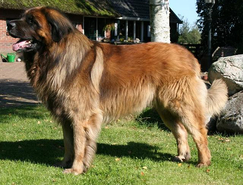
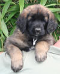
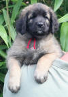
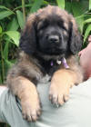
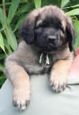
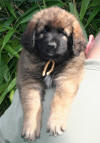
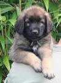
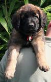
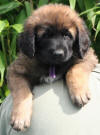
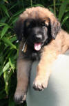

|
Ik
en de rest van mijn broers en zussen
Op 24 april
reisde mijn moeder, Bonita, naar Beilen in Nederland om haar vriend, Joep, te
ontmoeten. Het was echt liefde op het eerste gezicht.
Het resultaat van deze liefde mocht er zijn: ze kregen 9 puppies
Op 25 juni ben
ik geboren als laatste pup van Bonita en Joep. Mijn pleegouders, Mart en Frieda
zijn echte schatjes. Ze hebben heel goed voor mijn 4 zussen en mijn 3 broers
gezorgd. En dit zo'n 7,5 week. Ik voelde me daar heel goed thuis.
Mijn
adoptieouders zijn me komen halen op de verjaardag van mijn adoptievader, op 15
augustus. Ik was een mooi geschenk voor hem :-)
Een mooie foto van mijn papa,
Joep (gemaakt op 02/09/2006)

|
Foto's van mijn broers en
zussen (op 7 weken)
|

zus Foezel
geboren om 19.05 uur
en was 540 gr
woont nu in Nederland |

zus Flanelle
geboren om 19.20 uur
en was 440 gr
woont in België |

Broer Fergus
geboren om 20.05 uur
en was 500 gr
woont nu in Estland |
| |
|
|

Broer Fedor
geboren om 20.30 uur
en was 460 gr
woont in België |

zus Fadou
geboren om 20.55 uur
en was 480 gr
woont in België |

zus Felicidad
geboren om 21.35 uur
en was 480 gr
woont in Nederland |
| |
|
|

broer Festus
geboren om 23.10 uur
en was 560 gr
woont in België |

zus Firgo
geboren om 00.50 uur
en was 480 gr
is bij mijn geboorte-ouders
gebleven |

ikzelf
geboren om 02.40 uur
en was 500 gr
en woon in België |
|
Mijn gewicht
1 dag: 500 gr
1 week: 820 gr
2 weken: 1,3 kg
3 weken: 1,9 kg
4 weken: 2,9 kg
5 weken: 4,3 kg
6 weken: 5,7 kg
7 weken: 7,5 kg
8 weken: 8,3 kg
9 weken: 9,7 kg
10 weken: 11,6 kg
11 weken: 13,0 kg
12 weken: 14,9 kg
13 weken: 16,7 kg
14 weken: 18,0 kg
15 weken: 20,4 kg
16 weken: 22,8 kg
17 weken: 24,7 kg
18 weken: 28,4 kg
en daarna konden we hem
niet meer wegen |
Dit is mijn naam in het Chinees.
It was made by Patrick, my Taiwanese friend.
Tnx Pat for my Chinese name.
|
|
{kind=link}
{kind=link}
{kind=link}
{kind=link}
{kind=link}
{kind=link}
{kind=link}
{kind=link}
{kind=link}